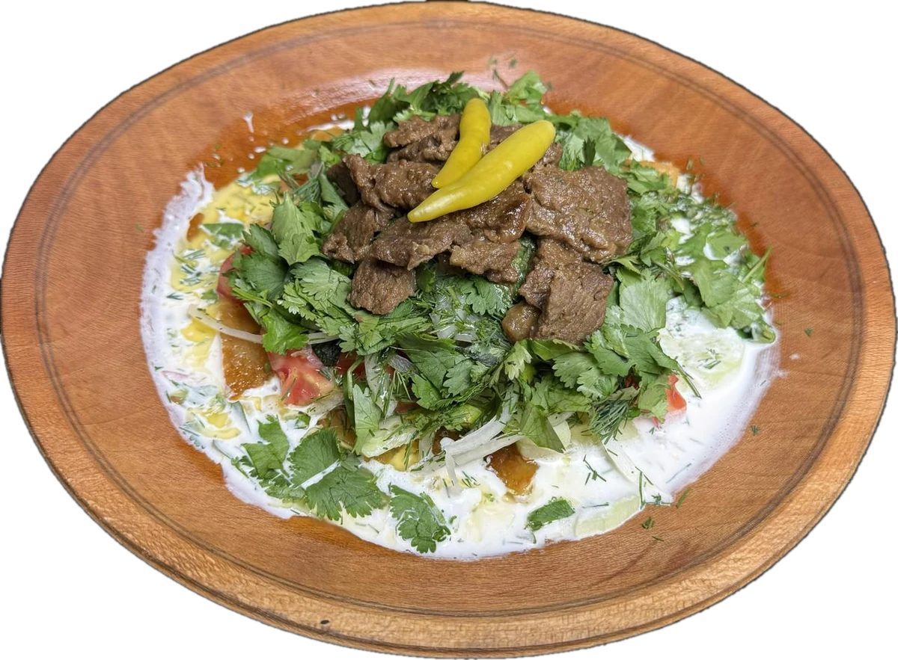
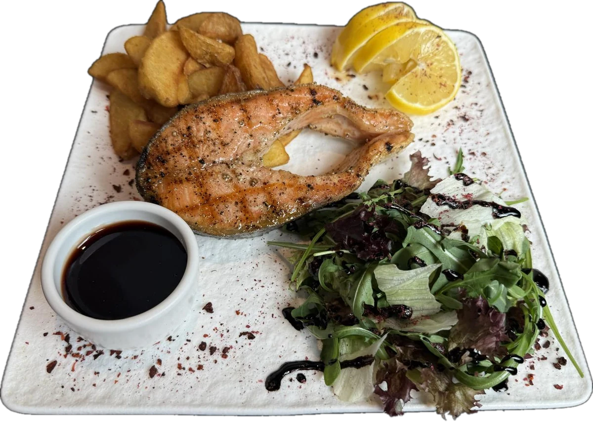

ВОСТОЧНАЯ КУХНЯ · УФА
Вкус Востока.
По-настоящему.
Здесь ароматный плов собирает за одним столом, шашлык напоминает о вкусе открытого огня, а горячий чай располагает к долгим разговорам. Добро пожаловать в чайхану ДониШеф!
Уфа · улица Ленина, 30

ВОСТОЧНАЯ КУХНЯ
Восточная кухняПлов и блюда на огнеМеню чайханыУфа
ПЛОВ ✦ МАНТЫ ✦ ШАШЛЫК ✦ ВОСТОЧНАЯ КУХНЯ

ВКУС ВОСТОКАО DONIШЕФ
Восток начинается
с гостеприимства.
Это тёплые встречи, разговоры за одним столом и блюда, которыми хочется поделиться. В ДониШеф мы готовим восточную кухню для обедов, семейных ужинов и встреч с близкими.
01Восточная кухня
02Блюда на огне
03Доставка и самовывоз
АТМОСФЕРА DONIШЕФ
Здесь встречаются
за одним столом.
ДОСТАВКА И САМОВЫВОЗ
ДониШеф —
там, где вы.
Любимые блюда восточной кухни — для дома, офиса или встречи с близкими. Позвоните нам, чтобы оформить заказ и уточнить условия доставки.

БАНКЕТЫ И ПРАЗДНИКИ
Чистое и светлое начало вашей истории
В уютной чайхане, где каждый элемент убранства говорит о традициях, мы создадим пространство для самого важного: тёплых слов близких, спокойного вечера и блюд, поданных с уважением к гостям.
0% Безалкогольный формат: градус эмоций высокий, напитков — нулевой.

ЖДЁМ В ГОСТИ
Заходите
в ДониШеф.
- Уфа, улица Ленина, 30 · 1 этаж, Кировский район+7 919 154-52-32
- Уфа, проспект Дружбы Народов, 19/5+7 917 487-67-19
- Уфа, проспект Дружбы Народов, 21/2+7 917 804-50-90
Время работыПонедельник — суббота: 11:00–22:00Воскресенье: 11:00–20:00